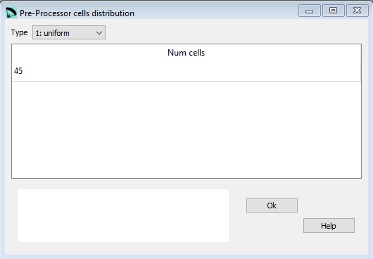
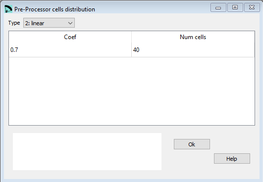
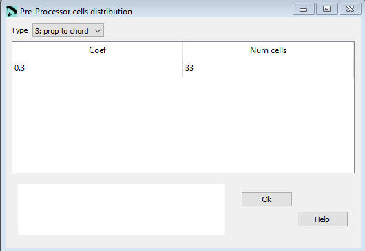
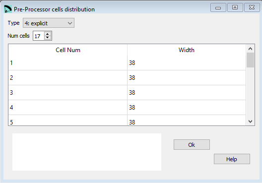

Pre-Processor cells distribution¶
In the window cells distribution the parameters out of the last section of the pre-processor input file can be edited.
There are four different possibilities to define the cells distribution.
Type 1: uniform¶
{kind=link}
Raw data:
**********************************
* 4. Cells distribution
**********************************
1
45
The wing does have 45 cells everyone with identical width.
Type 2: linear with reduction¶
{kind=link}
Raw data:
**********************************
* 4. Cells distribution
**********************************
2
0.7
40
The wing does have 40 cells.
The coefficient of 0.7 defines the liear cell reduction towards the wing tip.
Value = 1: cell with is uniform
Value = 0: the width of the last cell is minimal
Type 3: Reduction proportional to chord¶
{kind=link}
Raw data:
**********************************
* 4. Cells distribution
**********************************
3
0.3
33
The wing does have 33 cells.
The coefficient of 0.3 defines the width reduction proportional to chord.
Value = 1: all cells are uniform, independent of the chord
Value = 0: the cell width will be reduced strictly proportional to chord
Type 4: ecplicit definition¶
{kind=link}
Raw data:
**********************************
* 4. Cells distribution
**********************************
4
17
1 38
2 38
3 38
4 38
5 38
6 37
7 37
8 37
9 36
10 35
11 35
12 30
13 28
14 27
15 25
16 24
17 20.2
The example above defines a wing with 33 cells. Number 1 is the central one, then 16 cells to each side.
The second column defines the cell with in cm. If the sum of the cell with defined in here does not match the total wing span, lep will fix this during the processing.
The example below shows a wing with 18 cells.
To define a even number of cells we need a trick: we define a center cell with the width of 0.0. Tho both sides we have then 9 cells which makes a total of 18.:
**********************************
* 4. Cells distribution
**********************************
4
10
1 0.0
2 38
3 38
4 38
5 38
6 37
7 37
8 37
9 36
10 35
A more detailed description you can find here Laboratori d'envol website.